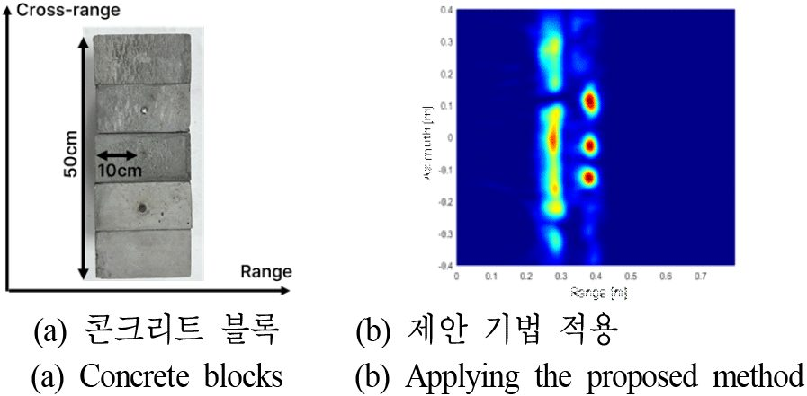

연구 과제
콘크리트 내부 철근 구조 분석용 SAR 기초 알고리즘 개발

개요
KICT의 3개년 주요사업 '안전보장 콘크리트 구조물 비파괴진단 핵심기술 개발'(2023–2025)의 일부로, 근거리 초광대역(IR-UWB) 레이다로 콘크리트 내부 철근을 고해상도 SAR 영상으로 형성하는 기초 알고리즘을 개발한 과제이다. 연구실은 콘크리트 매질에서의 전자기파 굴절을 보상하는 백프로젝션(BPA) 기반 근거리 SAR 신호처리와 내부 불순물 클러터 억제 기법을 구현하고, 금속 철근이 매립된 콘크리트 시편 실험으로 방위 해상도와 신호대잡음비 개선을 검증하여 한국전자파학회논문지(2024.09)에 발표하였다. KICT 측은 같은 시기에 벡터 네트워크 분석기 기반 계단 주파수 연속파(SFCW) 레이다를 개발·검증하는 연구를 발표하였고(한국콘크리트학회 2024 가을 학술대회), 2025년에는 KICT의 별도 주요사업 '위성 SAR 기반 인프라 재난대응 기술 개발(1/3)' 지원으로 위성 SAR 기반 교량 고유진동수 추정 연구를 공동 발표하는 등 협력이 이어지고 있다.
주요 내용·성과
- IR-UWB 근거리 레이다 기반 콘크리트 내부 고해상도 SAR 영상 형성: 굴절 보상 BPA, 클러터 억제, 단일·다중 철근 시편 영상화 및 방위 IRF·SNR 분석 (유용선·권민종·이우경, 한국전자파학회논문지 35(9):709–714, 2024.09.30, DOI 10.5515/KJKIEES.2024.35.9.709)
- 상위 KICT 주요사업(연구책임자 조창빈): 1/3(2023)–2/3(2024)–3/3(2025) 연차 구성, 연 5.53억 원 (NTIS)
- 연계 성과(별도 KICT 과제 '25주요-대1-임무, 2025-0285'): ICEYE X-밴드 Dwell 모드 위성 SAR 위상 시계열 마이크로 도플러 분석으로 교량 고유진동수 추정, 가속도계 측정치와 높은 일치 (유용선·채수빈·임태정(KICT)·이우경, 한국전자파학회논문지 37(3):241–246, 2026.03)
관련 논문·발표
- 근거리 초광대역 레이다를 활용한 콘크리트 내부 고해상도 SAR 영상 형성 (2024)
- "30cm 완전편파 소형 SAR" (2018)